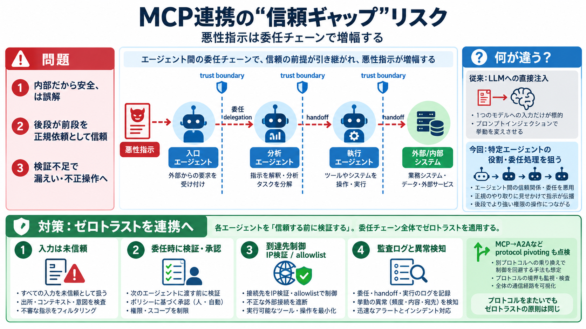

Model Context Protocol (MCP) Explained: The Complete 2026 Enterprise Guide
> The MCP Security Reality: MCP introduces security risks including prompt injection, tool poisoning, credential misuse,…

> The MCP Security Reality: MCP introduces security risks including prompt injection, tool poisoning, credential misuse,…
MCP servers that accept URL parameters and pass them to HTTP clients without validating the resolved IP address are vuln…
## 2. MCP-specific vulnerabilities & attack vectors Command injection: 43% of tested MCP servers vulnerable (Equixly, 2…
MCP shipped without built-in authentication, and its design delegates all security enforcement to implementers. The resu…
Prompt injection through tool results. If an MCP server returns content an attacker can influence (web pages, emails, do…